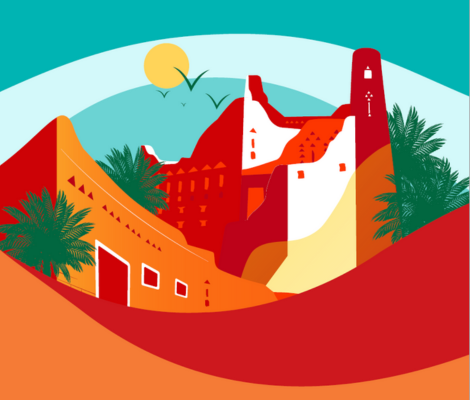

برنامج السعودية لرواد الفضاء هو برنامج سعودي أطلقته الهيئة السعودية للفضاء في 22 سبتمبر 2022 ويهدف لتأهيل كوادر سعودية متمرسة لخوض رحلات فضائية طويلة وقصيرة المدى والمشاركة في التجارب العلمية والأبحاث الدولية والمهام المستقبلية المتعلقة بالفضاء
مشروع تطوير منطقة العلا، هو مشروع يأتي في إطار التعاون والاستثمار السعودي الفرنسي والذي يهدف إلى تنشيط عملية السياحة داخل منطقة العلا السياحية، وتدير المشروع الوكالة الفرنسية للتطوير والتنقيب ووهي وكالة متخصصة في مجال الحفريات الأثرية تعمل على تطوير المفاهيم المتعلقة بالمتاحف والتخطيط وذلك من خلال إقامة العديد من المشروعات الاستثمارية المربحة في مجال البنية الأساسية
وكذلك إقامة الفنادق وذلك باستخدام أحدث أنواع التقنيات والتكنولوجيا الفرنسية، ويهدف مشروع تطوير منطقة العلا إلى جذب ما بين 1.5 و2.5 مليون سائح سنويًّا، وذلك في إطار جهود خادم الحرمين الشريفين صاحب السمو الملكي الملك سلمان بن عبدالعزيز آل سعود، وسمو ولي العهد الأمير محمد بن سلمان لدعم السياحة والاستثمار لتحقيق رؤية المملكة 2030
أطلق صاحب السمو الملكي الأمير محمد سلمان بن عبدالعزيز آل سعود ولي العهد رئيس مجلس الوزراء مشروع مدينة ذا لاين في عام 2021، لتؤسس مفهوماً جديداً للحياة الحضرية التي تتمحور حول الإنسان والطبيعة، وتكون نموذجاً فريداً للمدن المستدامة العاملة بالطاقة المتجددة 100%، إلى جانب المحافظة على 95% من الأراضي كمحمية طبيعية، انسجاماً مع أهداف المملكة للاستدامة
وتشمل المشاريع المبتكرة الأخرى في نيوم، أوكساچون وتروجينا وسندالة
المكعب (برج) المكعّب هو مشروع معماري مقترح لبناء ناطحة سحاب عملاقة على شكل مكعب بارتفاع 400 متر في حي القيروان بالرياض ، المملكة العربية السعودية ، أحد الأحياء الخمسة للتطوير العقاري المخطط له في مشروع المربع الجديد ، الذي تم إطلاقه في فبراير 2023. تصميم المربع وتصميم المكعب مستوحى من قصر المربع

تواصل المملكة، تحت قيادة خادم الحرمين الشريفين الملك سلمان بن عبد العزيز وولي عهده الأمين الأمير محمد بن سلمان؛ الاهتمام بتاريخها الثقافي، ومشروع بوابة الدرعية خير شاهد على ذلك.
وبدأت هيئة تطوير بوابة الدرعية التاريخية تنفيذ المرحلة الأولى من مشروع بوابة الدرعية التاريخية الذي يعد أكبر مشروع تراثي وثقافي في العالم لتأهيل وتطوير الدرعية التاريخية “جوهرة المملكة” بقيمة 75 مليار ريال سعودي؛ لتكون واحدة من أهم الوجهات السياحية والثقافية والتعليمية والترفيهية في المنطقة والعالم، مستفيدة من موقعها التاريخي، وثقافتها الفريدة، باعتبارها أرض الملوك والأبطال، وما يقع في قلبها من مواقع تراثية عالمية، أهمها حي الطريف التاريخي، المدرج ضمن قائمة المواقع التراثية العالمية بمنظمة الأمم المتحدة للتربية والعلوم والثقافة «اليونسكو»
أكد صاحب السمو الملكي الأمير عبدالعزيز بن سلمان بن عبدالعزيز وزير الطاقة أن الجميع يجب ألا ينسى أن من يقود رؤية المملكة 2030 هو صاحب السمو الملكي الأمير محمد بن سلمان بن عبدالعزيز ولي العهد نائب رئيس مجلس الوزراء وزير الدفاع، وهو شاب طموح للغاية ولا يعرف كلمة "مستحيل"
وقال سموه خلال مشاركته في جلسة حوارية ضمن فعاليات المؤتمر العالمي لريادة الأعمال (GEC) الذي تنظمه الهيئة العامة للمنشآت الصغيرة والمتوسطة "منشآت" بالتعاون مع الشبكة العالمية لريادة الأعمال (GEN): "مادمنا محظوظين بقائد بمثل هذه الصفات، فمن البديهي أن في هذا البلد عددًا كبيرًا من الشابات والشباب بالطموح والحماس والعزم نفسه يعملون لمستقبلهم ومستقبل بلدهم"